Our main objective in the remainder of this chapter is to gain a better understanding of the maximum principle by discussing and interpreting its statement and by applying it to specific classes of problems. We begin this task here by making a few technical remarks.
One should always remember that the maximum principle provides necessary conditions for optimality. Thus it only helps single out optimal control candidates, each of which needs to be further analyzed to determine whether it is indeed optimal. The reader should also keep in mind that an optimal control may not even exist (the existence issue will be addressed in detail in Section 4.5). For many problems of interest, however, the optimal solution does exist and the conditions provided by the maximum principle are strong enough to help identify it, either directly or after a routine additional elimination process. We already saw an example supporting this claim in Exercise 4.1 and will study other important examples in Section 4.4.
When stating the maximum principle, we ignored the distinction between different kinds of local minima by working with a globally optimal control
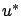
, i.e., by assuming that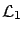
norm of the difference,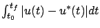
, small for small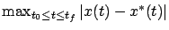
was small for small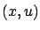
-space is measured by the 0-norm for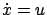
as an example and to recall the discussion in Section 3.4.5 related to Figure 3.6. In that context, the notion of a local minimum with respect to the norm we just described is in between the notions of weak and strong minima; indeed, weak minima are defined with respect to the 0-norm for both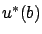
.
The statement of the maximum principle contains the condition (justified in
Section 4.2.8) that
 for all
for all
 . In fact, since the origin in
. In fact, since the origin in
 is an equilibrium of
the linear adjoint equation (4.31), if
is an equilibrium of
the linear adjoint equation (4.31), if
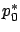
,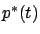
vanish for some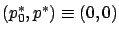
all the statements of the maximum principle are trivially satisfied. In some cases, it is possible to show that the adjoint vector itself, , is nonzero for all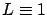
). The Hamiltonian satisfies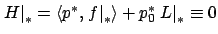
(by statement 3 of the maximum principle). If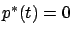
for some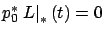
, hence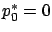
and we reach a contradiction with the nontriviality condition. We will give another example later involving a terminal cost; see Exercise 4.7 below. As for the abnormal multiplier , since it is the vertical coordinate of the normal to the separating hyperplane, corresponds to the case when the separating hyperplane is vertical (and cannot be tilted). The projection of such a hyperplane onto the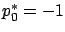
. We also know that the separating hyperplane cannot be vertical and cannot be 0 in the free-endpoint case (see the end of Section 4.2.10).